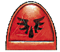
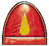

Imperial Forces |
Force Disposition Introduction |
Ork Forces |
|
Upon hearing of the invasion, the Blood Angels Third Company immediately re-routed to Armageddon. After the events of the Second War, Chapter Master Dante realised that it would be futile to deny Tycho his vengeance against the Orks. The Salamanders Chapter, also veterans of the last war, had sworn to defend Armageddon should the shadow of Ghazghkull ever again fall upon the planet's surface.
Joined by the Storm Giants and Marines Malevolent, elements of these Chapters are stationed on the outskirts of Hive Tempestora in preparation to retake it from the Orks.
For the attention of our Revered Lord, Commander Dante.
Fourth day of Maleficus, One Thousand, Nine Hundred and Ninety Nine Years of Our Emperor's Benevolence.
5/721999.M41
Thought for the day: The Emperor knows your every deed
|
| ||||||||||||||||||||||||||||||||||||||||||||||||||||||||
|
 It was with great chagrin that I read your proclamation concerning Brother-Captain Tycho's diversion into the midst of the Third Armageddon War, given that he is in current command of the entire Blood Angels Third Company. Although I too believe it would be worse than futile to deny Tycho his revenge against the Orks for his shattered face and the violent indignities that he and his men suffered in the last Armageddon War, I implore you to consider the consequences. My continued study of the damaged psyche of Tycho clearly shows that the cause of his nigh-uncontrollable rage stems from the after-effects of his brutal scarring at the hands of Warlord Magrot's War Horde. Last time we spoke on the matter Captain Tycho was barely able to calm down, and resorted to punching his fist clear through a reinforced plasteel door to quell his anger. It has been impressed upon me many times by Tycho that his need for revenge goes far deeper than this physical grievance, and it is painfully obvious that should he be restrained from following his bitter quest, the Black Rage will consume him completely. Therefore it is imperative that he is assigned to combat duty on Armageddon from this point forth.  However, it is the depth of this personal hatred towards the Orks, in particular those of Magrot's retinue, that I believe will compromise his effectiveness as a Captain. Needless to say, my Lord, you are aware of this possibility, but I would counsel you further on this matter having spent many long months watching Tycho's condition deteriorate . I believe Brother-Captain Tycho to be unsuitable as a leader of the Blood Angels Third Company. His vision is clouded by hatred, and this will be at its peak when surrounded by the aliens he despises with all his soul. Cold logic and reasoned strategy are the tools needed to win this war, and Tycho's impatience to wreak his vengeance upon his mortal enemies is not conducive to a responsible command position. Imagine a situation where, in the crucible of combat, Tycho is able to hunt and destroy Warlord Magrot. The Third Company would find themselves bereft of their hero and Captain until the matter is resolved beyond all doubt. I also fervently believe Tycho may well divert the might of the entire Blood Angels Third Company to this end. At a time when our most holy warriors are sorely needed, we cannot afford to let personal grievances, however deep, cloud our divine purpose. May Sanguinius watch over your soul, Chaplain Lemartes
Digi-laser: Embittered: Hates Orks: Independent Character: Honour Guard: | |||||||||||||||||||||||||||||||||||||||||||||||||||||||||